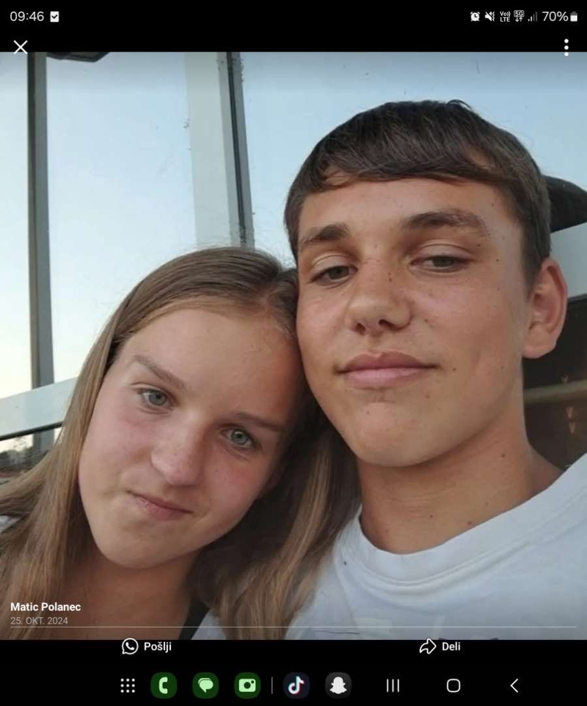

Matic Polanec je izjemno predan kmet. Vsak dan skrbi za svojo veliko kmetijo. Njegova kmetija je znana po kakovosti in urejenosti. Rad dela z živalmi in skrbi za naravo. Njegova družina mu pomaga pri vsakodnevnih opravilih. Kmetija Polanec je ponos regije. Matic vedno išče nove načine za izboljšave. Njegova polja so vedno zelena in rodovitna. Kmetija ima dolgo tradicijo. Matic je vztrajen in delaven človek. Njegovo delo je pomembno za skupnost. Kmetija je čista in urejena. Živali so zdrave in dobro oskrbljene. Matic spoštuje naravo. Njegovo delo je navdihujoče. Kmetija raste in se razvija. Vsak dan prinaša nove izzive. Matic jih uspešno premaguje. Njegova prihodnost je svetla. Kmetija Polanec je simbol uspeha.

Kmetija Polanec je ena najboljših kmetij v regiji. Znana je po vrhunski kakovosti pridelkov in tradiciji.